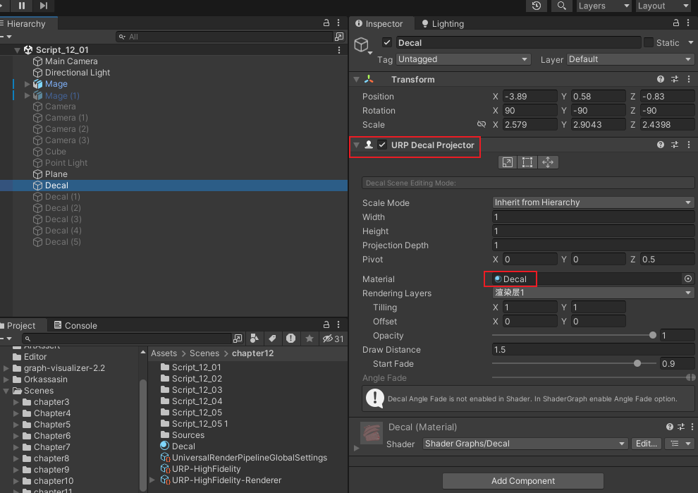

12. 渲染管线
1.Full Screen Pass RendererFeature 全屏幕渲染通道
1.执行逻辑
1.1.读取颜色缓存写到_CameraColorAttachmentA附加贴图里面
1.2.复制到另外一张贴图_FullscreenPassColorCopy全屏幕通道颜色复制贴图
1.3.打开全屏幕通道颜色复制贴图
1.4.调用shader对全屏幕通道颜色复制贴图进行修改,然后存回去原来的附加颜色贴图.最后就被FrameBuffer读取到屏幕上显示了
2.参数分析
可配置参数
Name(名字):单纯是在各个地方显示的名字,因为可以开很多全屏幕处理的,所以需要一个名字来表明是哪一个全屏幕处理
Pass Material(材质通道):使用哪个材质通道来对贴图进行处理,也就是上面的第四步使用的材质球
Injection Point(注入点):指定在什么时候获取附加贴图,可选参数有三个
1.Before Rendering Transparents在渲染透明物体前,也就是完成了不透明物体的渲染和AlphaTest的不透明物体渲染都完成了
2.Before Rendering PostProcessing在后处理之前,也就是所有的图像都渲染完了.
3.After Rendering Post Processing在后处理之后,也就是全部都处理完了,最后再获取图像
Requirements(需求):你想要复制什么贴图
可选的有none(不复制),Everything(全部)Depth(深度贴图),Normal(法线贴图),Color(颜色贴图)Motion(运动矢量贴图)
Pass Index(通道索引):决定着色器用哪个通道(URP只能使用单通道的)
2.Decal 贴花
1.参数分析
可配置参数
1.1Techinique(技术):可选的参数有三种
Automatic(自动):Unity根据平台的不同自动选择
DBuffer(缓冲):预计算法线图,复制深度图Depth,然后保存固有色到RT0,法线到RT1,保存金属度AO光滑度到RT2,最后渲染的时候读取三种贴图采样来进行光照计算绘制.
DBuffer的贴花和场景中贴花数量复杂度无关,需要额外分配三张贴图.ScreenSpace.数量的增加只是绘制贴图依然一次性计算
ScreenSpace(屏幕空间):所有物体绘制完成之后单独一个一个绘制.
每一个贴花都要独立绘制,优点是只有一个固有色贴图在RT0,和复制过来的Depth贴图,其余计算都动态读取,所以对于CPU性能要求更高
1.2 MaxDrawDistance(最大绘制距离):绘制贴花的最大距离
1.3 Use Rendering Layers(使用渲染层功能):开启之后就允许对部分指定层有效
2.使用逻辑
2.1.添加URP Decal Projector组件
2.2.指定Decal材质球(也可以自定义)
